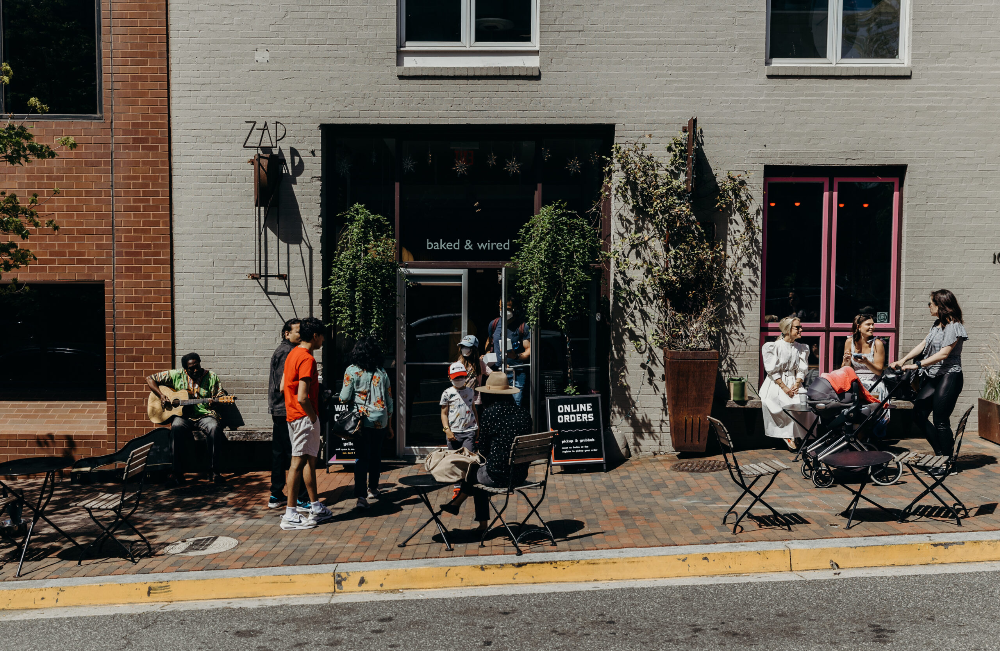

The Story
We’re a family bakery located in the heart of Georgetown getting you baked since 2001. We produce small-batch baked goods prepared from family recipes and handcrafted coffee from roasters all across the country. We believe that the best memories are formed around food and drink, and we’re dedicated to creating community gathering spots around DC. Come on over – we’re your big weird family.
The Family
Tessa, Zak, Teresa, & Tony
The Sister Stores
At a baked joint, we specialize in naturally leavened bread – handmade and baked daily on site. we also pair our fresh bread with homey ingredients to offer a menu of the same type of food we eat at home – simple cooking done well. you can also find baked&wired desserts here!
a baked jointThe Spot
1052 Thomas Jefferson St NW, Washington, DC 20007
get directions